pp_check method for class "evpost". This provides an interface
to the functions that perform posterior predictive checks in the
bayesplot package. See PPC-overview for
details of these functions.
# S3 method for evpost
pp_check(
object,
...,
type = c("stat", "overlaid", "multiple", "intervals", "user"),
subtype = NULL,
stat = "median",
nrep = 8,
fun = NULL
)Arguments
- object
An object of class "evpost", a result of a call to
rpostorrpost_rcpp. Currentlyobject$model = "gev","gp","bingp"and"pp"are supported.- ...
Additional arguments passed on to bayesplot functions.
- type
A character vector. The type of bayesplot plot required:
"stat" for predictive test statistics (see PPC-test-statistics),
"overlaid" for comparison of observed data to predictive simulated datasets using overlaid density function or distribution functions (see PPC-distributions),
"multiple" for comparison of observed data to predictive simulated datasets using multiple summary plots (see PPC-distributions),
"intervals" for comparison of observed data to predictive simulated datasets using sample medians and a predictive interval, (see PPC-intervals),
"user" for direct access to the default bayesplot function
pp_check. This requires the argumentfunto be supplied (see pp_check).
- subtype
A character scalar. Specifies the form of the plot(s) produced. Could be one of
"dens", "hist", "boxplot", "ribbon"or"intervals". Ifsubtypeis not supplied then the defaults are:"ecdf"iftype = overlaid,"dens"iftype = multiple,"intervals"iftype = intervals.subtypeis not relevant iftype = "stat".- stat
See PPC-test-statistics.
- nrep
If
type = "multiple"the maximum number of summary plots of the predictive simulated datasets to include. Ifnrepis greater thannrow(object$data_rep)thennrepis set equal tonrow(object$data_rep).- fun
The plotting function to call. Only relevant if
type = "user". Can be any of the functions detailed at PPC-overview. The "ppc_" prefix can optionally be dropped if fun is specified as a string.
Value
A ggplot object that can be further customized using the
ggplot2 package.
Details
For details of these functions see PPC-overview. See also the vignette Posterior Predictive Extreme Value Inference and the bayesplot vignette Graphical posterior predictive checks.
The general idea is to compare the observed data object$data
with a matrix object$data_rep in which each row is a
replication of the observed data simulated from the posterior predictive
distribution. For greater detail see Chapter 6 of Gelman et al. (2013).
The format of object$data depends on the model:
model = "gev". A vector of block maxima.model = "gp". Data that lie above the threshold, i.e. threshold exceedances.model = "bingp"ormodel = "pp". The input data are returned but any value lying below the threshold is set toobject$thresh.
In all cases any missing values have been removed from the data.
If model = "bingp" or "pp" the rate of threshold exceedance
is part of the inference. Therefore, the number of values in
object$data_rep that lie above the threshold varies between
predictive replications, with values below the threshold being
left-censored at the threshold. This limits a little the posterior
predictive checks that it is useful to perform. In the examples below
we have compared object$data and object$data_rep using
only their sample maxima.
References
Jonah Gabry (2016). bayesplot: Plotting for Bayesian Models. R package version 1.1.0. https://CRAN.R-project.org/package=bayesplot
Gelman, A., Carlin, J. B., Stern, H. S., Dunson, D. B., Vehtari, A., and Rubin, D. B. (2013). Bayesian Data Analysis. Chapman & Hall/CRC Press, London, third edition. (Chapter 6)
See also
rpost and rpost_rcpp for sampling
from an extreme value posterior distribution.
bayesplot functions PPC-overview, PPC-distributions, PPC-test-statistics, PPC-intervals, pp_check.
Examples
# \donttest{
# GEV model
data(portpirie)
mat <- diag(c(10000, 10000, 100))
pn <- set_prior(prior = "norm", model = "gev", mean = c(0,0,0), cov = mat)
gevp <- rpost(1000, model = "gev", prior = pn, data = portpirie,
nrep = 50)
# Posterior predictive test statistics
pp_check(gevp)
#> `stat_bin()` using `bins = 30`. Pick better value with `binwidth`.
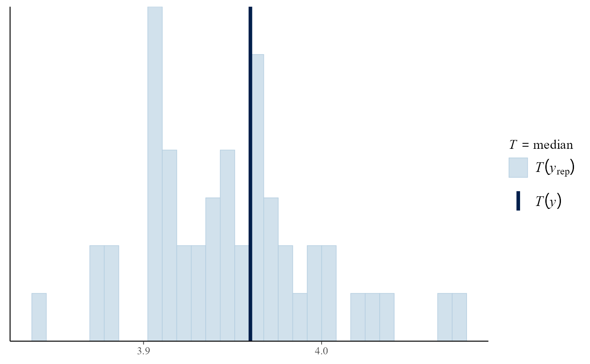
pp_check(gevp, stat = "min")
#> `stat_bin()` using `bins = 30`. Pick better value with `binwidth`.
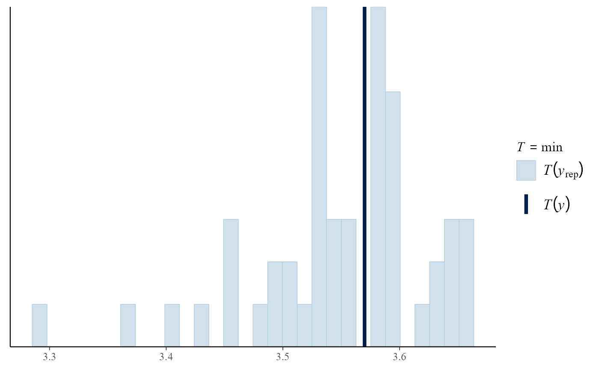
pp_check(gevp, stat = c("min", "max"))
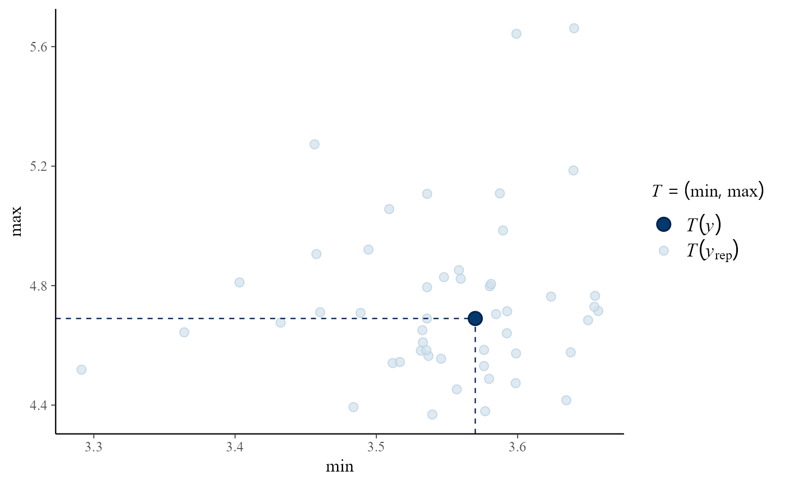
iqr <- function(y) diff(quantile(y, c(0.25, 0.75)))
pp_check(gevp, stat = "iqr")
#> Error in get(as.character(FUN), mode = "function", envir = envir): object 'iqr' of mode 'function' was not found
# Overlaid density and distributions functions
pp_check(gevp, type = "overlaid")
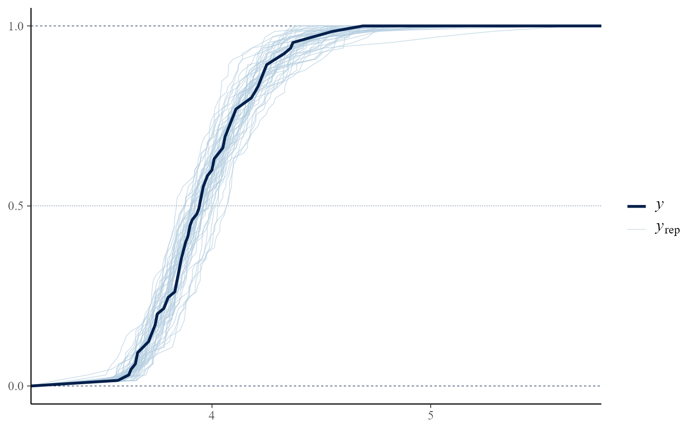
pp_check(gevp, type = "overlaid", subtype = "dens")
 # Multiple plots
pp_check(gevp, type = "multiple")
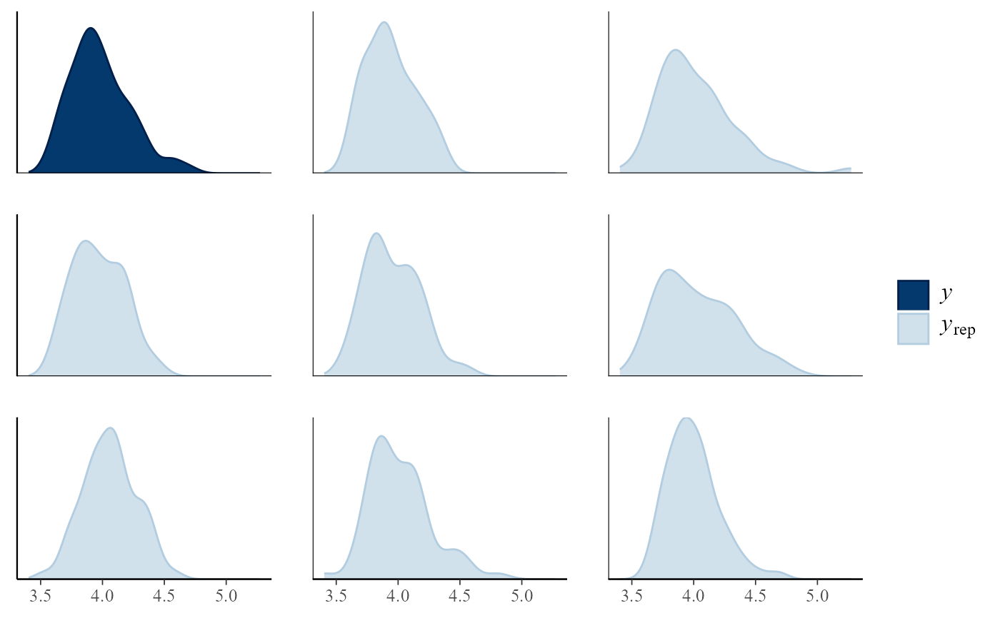
pp_check(gevp, type = "multiple", subtype = "hist")
#> `stat_bin()` using `bins = 30`. Pick better value with `binwidth`.
# Multiple plots
pp_check(gevp, type = "multiple")
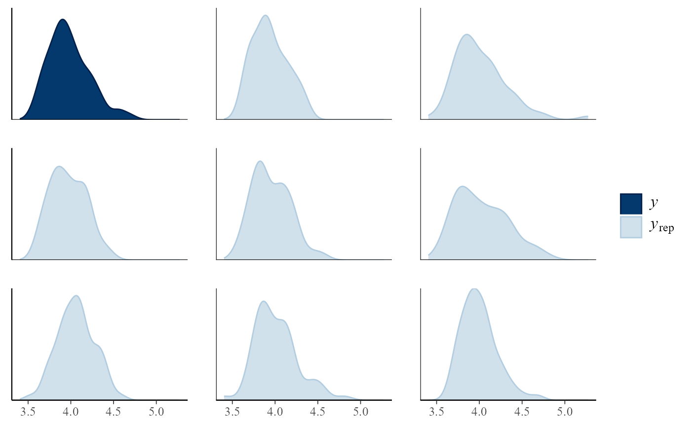
pp_check(gevp, type = "multiple", subtype = "hist")
#> `stat_bin()` using `bins = 30`. Pick better value with `binwidth`.
 pp_check(gevp, type = "multiple", subtype = "boxplot")
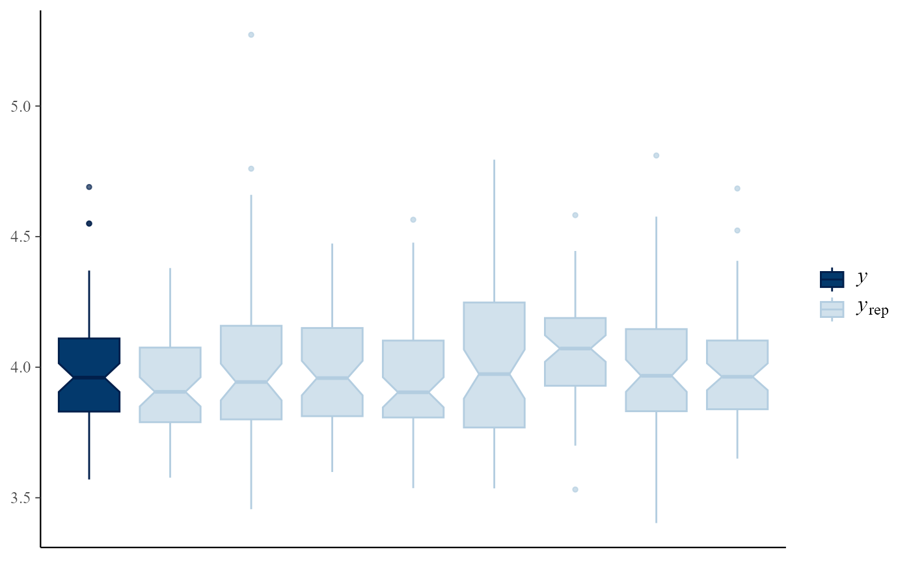
# Intervals
pp_check(gevp, type = "intervals")
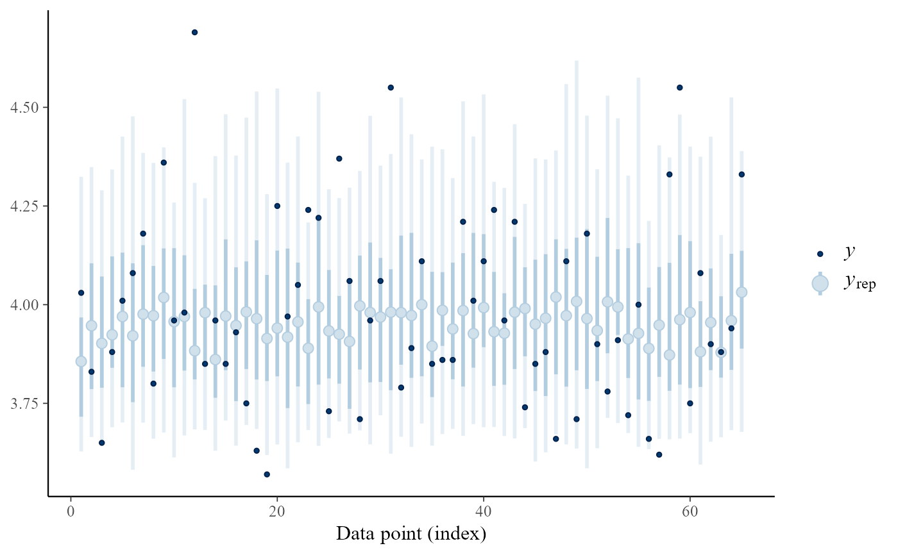
pp_check(gevp, type = "intervals", subtype = "ribbon")
pp_check(gevp, type = "multiple", subtype = "boxplot")
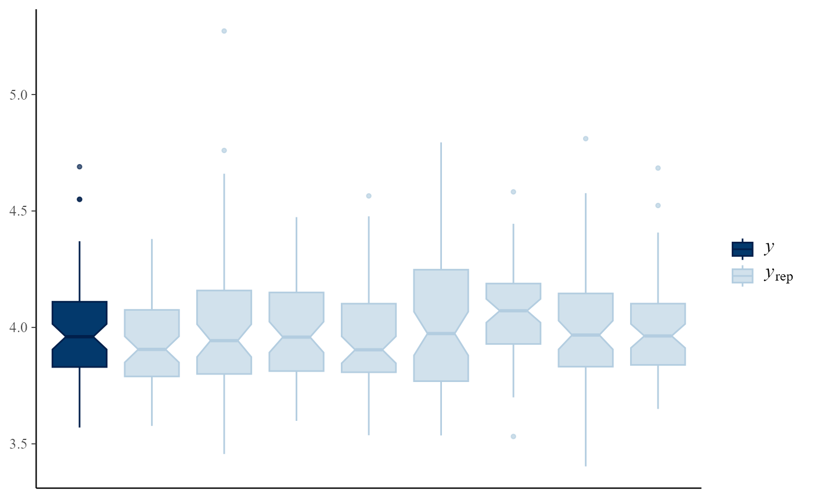
# Intervals
pp_check(gevp, type = "intervals")
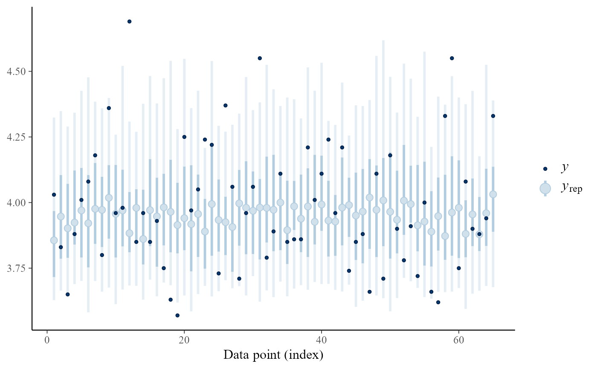
pp_check(gevp, type = "intervals", subtype = "ribbon")
 # User-supplied bayesplot function
# Equivalent to p_check(gevp, type = "overlaid")
pp_check(gevp, type = "user", fun = "dens_overlay")
# User-supplied bayesplot function
# Equivalent to p_check(gevp, type = "overlaid")
pp_check(gevp, type = "user", fun = "dens_overlay")
 # GP model
u <- quantile(gom, probs = 0.65)
fp <- set_prior(prior = "flat", model = "gp", min_xi = -1)
gpg <- rpost(n = 1000, model = "gp", prior = fp, thresh = u,
data = gom, nrep = 50)
pp_check(gpg)
#> `stat_bin()` using `bins = 30`. Pick better value with `binwidth`.
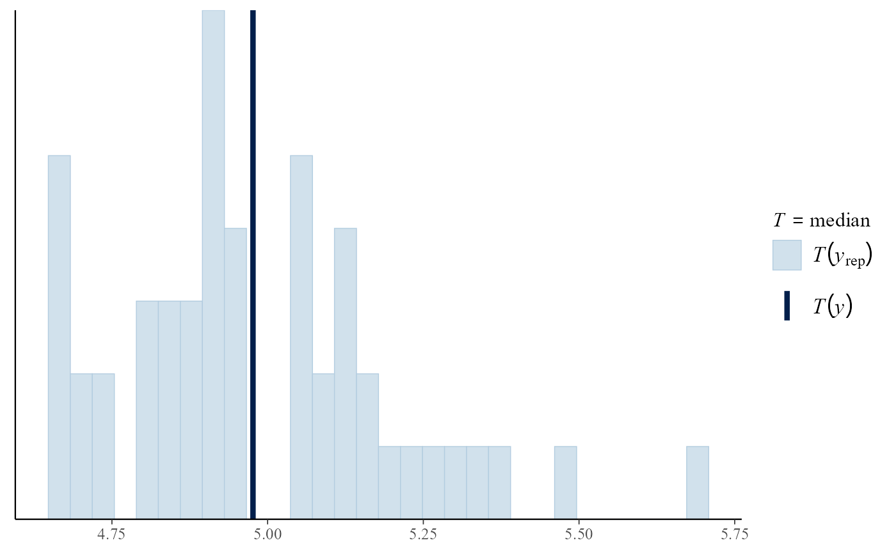
pp_check(gpg, type = "overlaid")
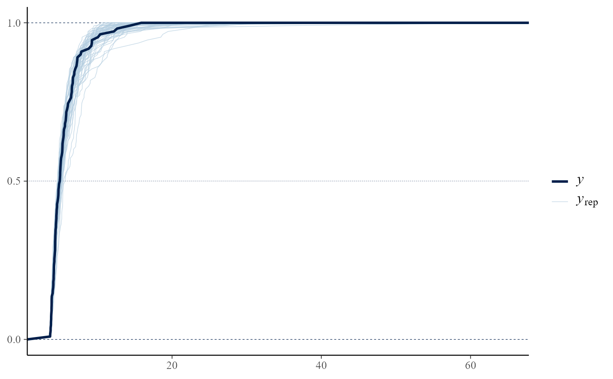
# bin-GP model
bp <- set_bin_prior(prior = "jeffreys")
bgpg <- rpost(n = 1000, model = "bingp", prior = fp, thresh = u,
data = gom, bin_prior = bp, nrep = 50)
pp_check(bgpg, stat = "max")
#> `stat_bin()` using `bins = 30`. Pick better value with `binwidth`.
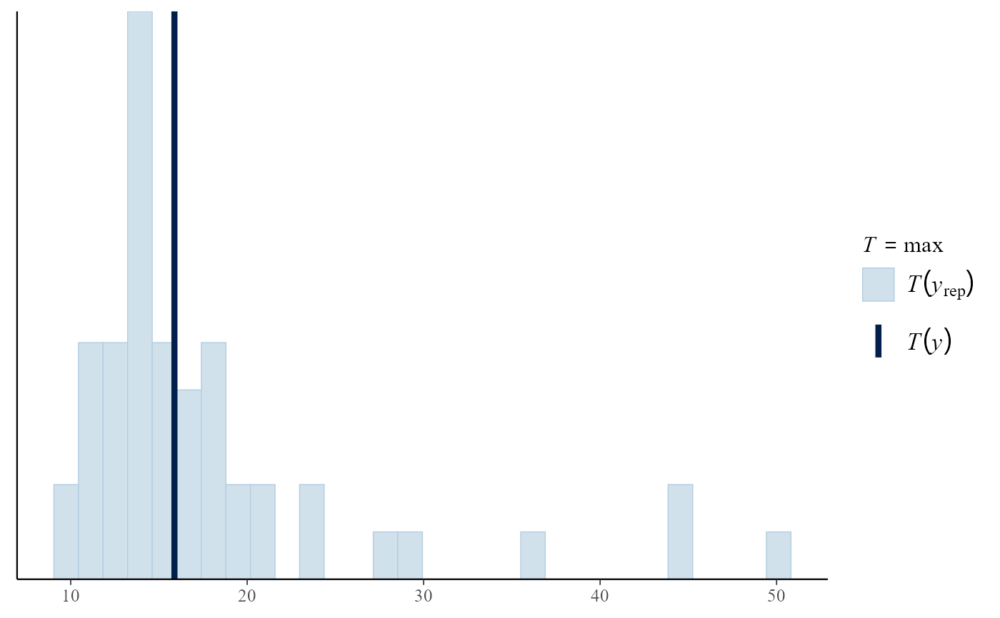
# PP model
data(rainfall)
rthresh <- 40
pf <- set_prior(prior = "flat", model = "gev", min_xi = -1)
ppr <- rpost(n = 1000, model = "pp", prior = pf, data = rainfall,
thresh = rthresh, noy = 54, nrep = 50)
pp_check(ppr, stat = "max")
#> `stat_bin()` using `bins = 30`. Pick better value with `binwidth`.
# GP model
u <- quantile(gom, probs = 0.65)
fp <- set_prior(prior = "flat", model = "gp", min_xi = -1)
gpg <- rpost(n = 1000, model = "gp", prior = fp, thresh = u,
data = gom, nrep = 50)
pp_check(gpg)
#> `stat_bin()` using `bins = 30`. Pick better value with `binwidth`.
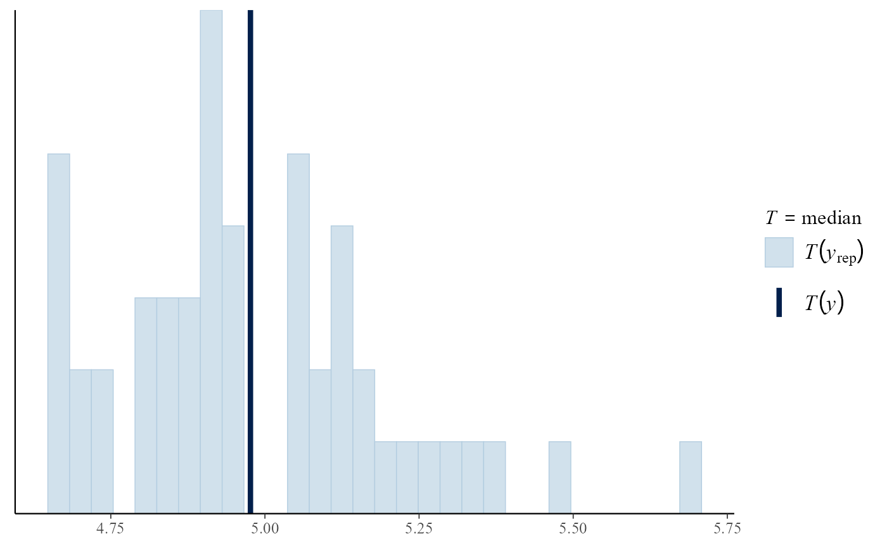
pp_check(gpg, type = "overlaid")
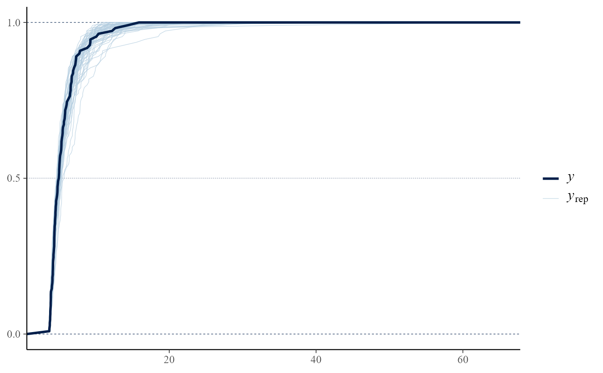
# bin-GP model
bp <- set_bin_prior(prior = "jeffreys")
bgpg <- rpost(n = 1000, model = "bingp", prior = fp, thresh = u,
data = gom, bin_prior = bp, nrep = 50)
pp_check(bgpg, stat = "max")
#> `stat_bin()` using `bins = 30`. Pick better value with `binwidth`.
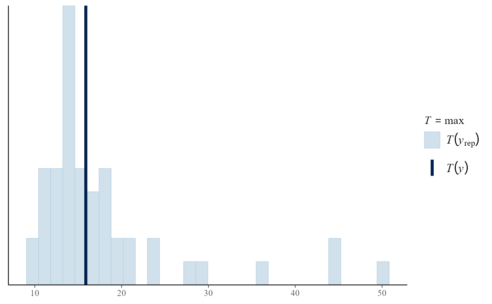
# PP model
data(rainfall)
rthresh <- 40
pf <- set_prior(prior = "flat", model = "gev", min_xi = -1)
ppr <- rpost(n = 1000, model = "pp", prior = pf, data = rainfall,
thresh = rthresh, noy = 54, nrep = 50)
pp_check(ppr, stat = "max")
#> `stat_bin()` using `bins = 30`. Pick better value with `binwidth`.
 # }
# }